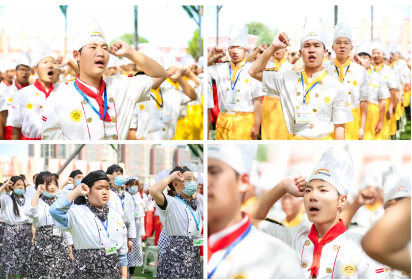

如今，已经步入八月下旬，仍有一批想要学技术的同学未能完成择校，现在不免着急，害怕再晚就不容易找到好学校了。为了帮助大家解决择校难题，让大家能够顺利入学，郑州新东方烹饪学校开启了线上报名通道，学子们纷纷线上报名入学!
同学们是通过什么方式来了解学校的?
择校需慎重，实地考察是关键。当然，我们考虑到家长们可能因为种种原因，不方便到校。因此，我校特意开启了校园线上直播，快手搜索：zzxdfprxx 即可让老师在线带你逛校园，还能充分了解到学校的各种信息！现在，让小编再次为你介绍一下学校的基本情况吧！
课程设置
郑州新东方烹饪学校开设有中餐、西餐、西点、餐饮酒店管理、幼儿保育、特色小吃等专业，可以满足不同年龄段学子的需求。另外，烹饪在当前社会属于热门行业，学子毕业后就能有广阔的就业空间。
教学模式
郑州新东方烹饪学校采用“素质+技能”一体化教育。学生在校期间不单单能掌握精湛技能，更能养成坚强独立、刻苦奋斗的优良品格，成为一名集素质与技能于一体的综合型人才，在市场更受欢迎。

就业服务
郑州新东方烹饪学校采用校企合作模式，与多家企业达成合作伙伴关系，并定期开展校园招聘会、校企合作班、企业观摩行等活动，为学子提供就业服务，使学子不必担忧就业问题。
如今，郑州新东方烹饪学校第二批学籍注册网上报名进行中，现在报名还有高额助学金，赶快来报名吧！